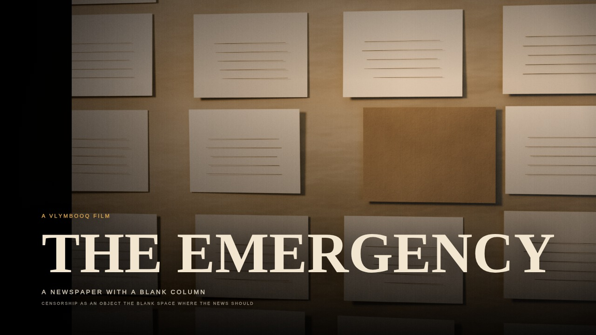
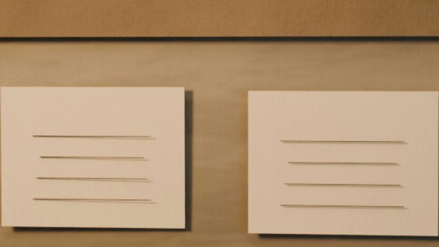
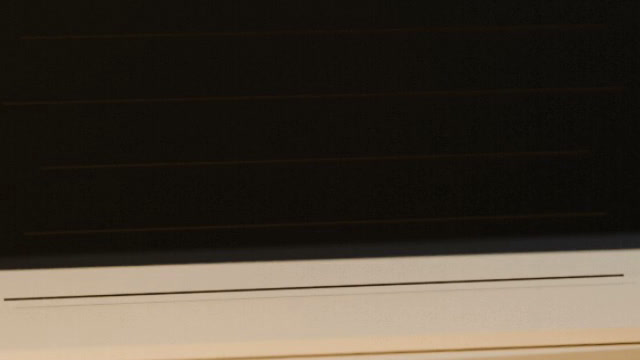
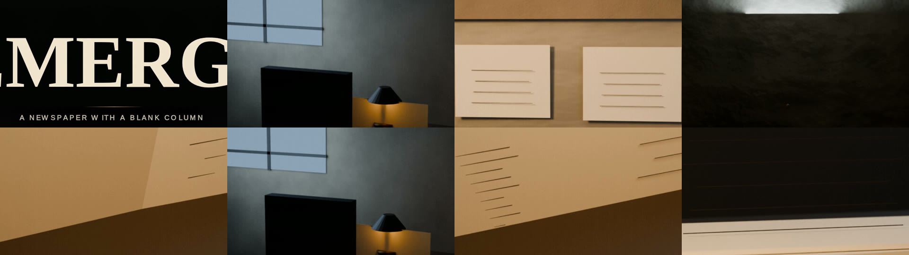

2
Paper wipe
A printed edge carries the next set into frame.
A 4:07 film in 8 scenes and 42 shots, built from 8 procedural sets, 40 sourced lines and 7 authored transitions. Every frame rendered on free GitHub Actions hardware.

Final · run 28The Emergency. A democracy suspended in the name of stability; the debate over civil liberty, federalism and memory remains live.
The final cut runs 4:07 at 24 fps; the average shot is 5.9 seconds. 35 of the 42 joins are hard cuts. The other 7 are authored transitions (paper wipe, page turn, iris, dip). The scene list below is generated from the release timeline, not the storyboard.
Open on one thing the film can hold, then land the title without a lecture.
Show the decision, who made it, and the words it was made in.
Explain how the decision reached ordinary life: the law, the police, the press.
Count what it took, in the terms the record uses, without inventing a figure.
Find the moment the order broke: the election, the release, the first page printed again.
Put the dispute on the table: who defended it, who fought it, and on what ground.
Show what was written down, and what the writing left out.
Return to the opening object: what survived, what was withdrawn, what is still on the record.
The grammar is paper-ledger. The signature moves are listed below. Transition counts come from the final edit manifest.
A printed edge carries the next set into frame.
A page turns and the next set arrives on its back.
A lamp or valve closes to a circle, moving the eye to the next object.
A held gap between two arguments.
The default join. Used where softening would weaken the argument.
Six frames from the approved final cut, one from each of six scenes, plus a contact sheet of every scene frame. No stock footage; every set is procedural.



The storyboard is validated before rendering. Each narration line carries a source id, and the render fails if the line, shot or source is missing. The counts below come from the final release timeline.
Blender, Piper, Chromium and ffmpeg run on a free Ubuntu CPU runner. The owner's machine writes the code; it does not render the film. The pipeline is public, repeatable and allowed to fail loudly.
The storyboard is a JSON contract. Every narration line names a source. The validator refuses unsourced lines, missing shots and filler before a runner is allowed to render.
release: film-emergency-1975-final-28 · timeline.json + metadata.jsonBlender 4.2 builds the film's sets as still plates. No stock images.
scripts/film/render-plates.jsPiper reads the script locally with en_US-lessac-medium. No cloud narration, no per-word billing, no API key in the repository.
scripts/film/build-film.jsChromium drives the timeline frame by frame: push-ins, pans, match cuts, mask wipes, impact cards and captions. The camera is code, so every frame is repeatable.
js/film.jsffmpeg synthesises the score, mixes the narration, burns the SRT into the master and encodes the MP4.
scripts/film/build-film.jsThe render runs on GitHub-hosted Ubuntu CPU. No GPU. No paid runner. The owner's machine writes the code; it does not render the film.
.github/workflows/film.ymlEach entry is taken from the release itself: the timeline, the edit manifest and the independent QC report. A dossier that only shows the final cut is a portfolio, not a process.
40 narration lines across 5 sources. Every line in the final timeline resolves to a source in the release metadata; the validator refuses a line without one.
8 scenes, 42 shots, 4:07. Average shot 5.9s. 35 hard cuts and 7 authored transitions.
Passed: -1.8 dBTP wanted no higher than -1; I -13.5 LUFS wanted -16.5 to -11; median 45.9 dB wanted at least 36 dB, worst 42.1 dB at S01; 73 cues in emergency-1975.srt; median edge/interior 1.27 wanted at most 1.75.
Release film-emergency-1975-final-28 carries the 1080 master, SRT, thumbnail, timeline, edit manifest and script. The site deploys only the 720 preview.
Recent Film pipeline runs, read from the public GitHub API. The workflow log is part of the record.
Source: github.com/renj-arch/dimsred/actions/workflows/film.yml
The same free, local toolchain on every film: no paid API, no GPU and no stock footage.
“If the edit is weak, the render does not ship.”
The 1080 master is published only after independent QC passes and the release is attached.